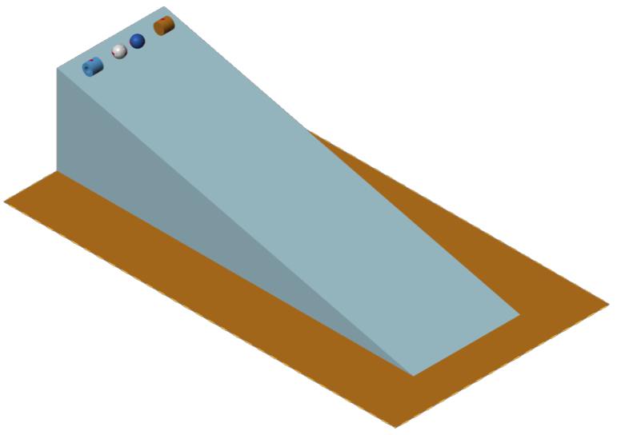
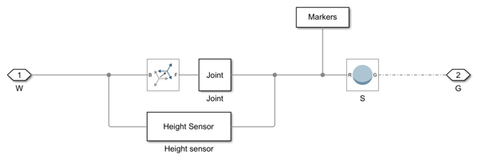
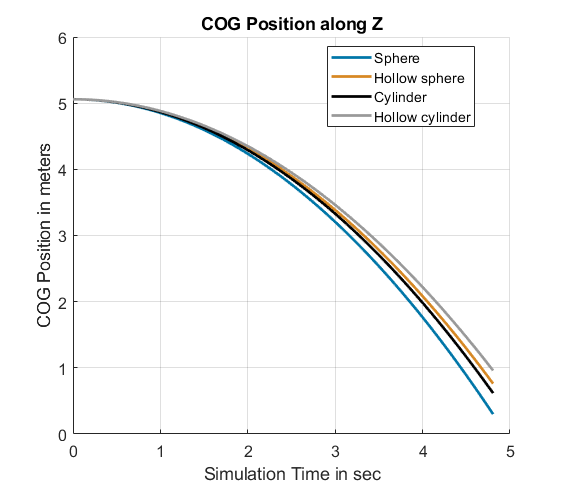

Model Objects Rolling Down a Ramp with Simscape Multibody
The model simulates four objects (a sphere, a hollow sphere, a cylinder, and a hollow cylinder) moving down a ramp. These four objects have been selected because they have very similar geometrical properties, but can have very different inertias. The objects have been modeled with the intention of isolating inertia as the primary variable affecting their motion down the ramp. All objects have the same radius and mass, but differ in their inertias. This approach allows for a focused exploration of how mass distribution within an object influences its rolling behavior.
Contents

Model Overview
Once the model is open, you can perform different modifications (such as activating or deactivating friction) by clicking on the links provided in the model canvas:

Solid Object Model
The figure below shows how the sphere is modeled. The sphere is modeled using a Solid Block and is connected with the main reference system with the Joint subsystem. The Joint subsystem defines the degrees of freedom of the sphere, allowing it to slide along the ramp and to rotate. The subsystem Height Sensor monitors the height of the sphere over time. If the sphere reaches the edge of the ramp first, the height sensor will stop the simulation to prevent it from falling over the ramp's edge. The other objects (hollow sphere, cylinder, and hollow cylinder) are modeled in a similar way.
Contact Model
The contact between the objects and the ramp is modeled using a Spatial Contact Force block. The block calculates a friction force based on the reaction force of the ramp (it is also possible to deactivate the friction force if desired). Additionally, stiffness and damping values are provided in the block that are used to determine how the objects are deformed due to their reaction force. Finally, the subsystem Calculate Energy logs the contact variables and estimates the energy lost in the contact between objects and ramp.

Parametrization
The model is parametrized with the script simpleInertiaModelParam.mlx. In the script you can change the dimensions of the ramp and of the objects, as well as their mass and color. Once the simulation is started, the objects will start moving along the ramp. The simulation automatically stops as soon as the first object has reached the edge of the ramp. You can decide whether to simulate the model with or without friction by clicking on the links provided in the model canvas. If friction is activated, the friction force will apply a torque to the objects, inducing them to roll. In this case, the inertia will have an impact on how the objects' motion. If friction is deactivated, there is no force building a torque. Consequently, the objects will simply slide along the ramp. As they are sliding and not rolling, the inertia will not impact their movement.
Analyze Results: Position over time
After simulating the model, you can analyze the motion of the objects as they roll or slide along the ramp. The links in the model canvas can be clicked to activate different post processing functionalities.
Analyze Results: Energy over time
Since all four object have the same mass, they will also have the same potential energy at the beginning of the simulation (provided that they are placed at the same height). With the function visualizeEnergy (which can also be called from the model canvas), you can analyze the object's energy over time.